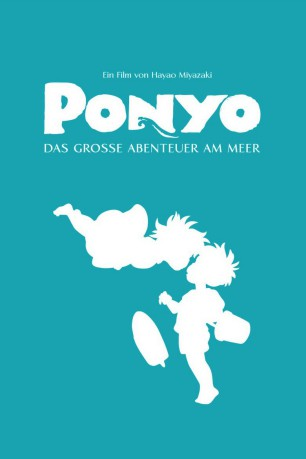

gesehen am 07.02.2016
gesehen am 07.02.2016Alternativ: Ponyo (Englischer Titel) gesehen am 07.02.2016
 
 IMDB-Wertung: 7.7 / 10
IMDB-Wertung: 7.7 / 10  Metascore:
Metascore: 
The son of a sailor, 5-year old Sosuke lives a quiet life on an oceanside cliff with his mother Lisa. One fateful day, he finds a beautiful goldfish trapped in a bottle on the beach and upon rescuing her, names her Ponyo. But she is no ordinary goldfish. The daughter of a masterful wizard and a sea goddess, Ponyo uses her father's magic to transform herself into a young girl and quickly falls in love with Sosuke, but the use of such powerful sorcery causes a dangerous imbalance in the world. As the moon steadily draws nearer to the earth and Ponyo's father sends the ocean's mighty waves to find his daughter, the two children embark on an adventure of a lifetime to save the world and fulfill Ponyo's dreams of becoming human.
Jahr: 2008
Dauer: 101 Minuten
FSK: 0
Land: Japan Studio: UFATonspuren:
Untertitel: Deutsch,
Auflösung: 1080p (1920x1040) Größe: 4925 MB
Genre: Fantasy, Animation/Trick, Familie
Regisseur: Hayao Miyazaki
Drehbuch: Hayao Miyazaki
Soundtrack: Joe Hisaishi
Darsteller:
 Cate Blanchett als Granmamare
Cate Blanchett als Granmamare Matt Damon als Kôichi
Matt Damon als Kôichi Tina Fey als Lisa
Tina Fey als Lisa Cloris Leachman als Kayo
Cloris Leachman als Kayo Liam Neeson als Fujimoto
Liam Neeson als Fujimoto Jennessa Rose als Kumiko
Jennessa Rose als Kumiko Lily Tomlin als Toki
Lily Tomlin als Toki Betty White als Yoshie
Betty White als Yoshie Carlos Alazraqui als
Carlos Alazraqui als  Bob Bergen als
Bob Bergen als  Johanna Braddy als
Johanna Braddy als  John Cygan als
John Cygan als  Crispin Freeman als Additional Voices
Crispin Freeman als Additional Voices Jess Harnell als
Jess Harnell als  Sherry Lynn als
Sherry Lynn als  Laraine Newman als
Laraine Newman als  Colleen O'Shaughnessey als Karen
Colleen O'Shaughnessey als Karen Jennifer Darling als
Jennifer Darling als Datei: X:\Kinder Anime\Studio Ghibli\Ponyo das verzauberte Goldfischmädchen (2008, FSK0, 1920x1040).mkv seit 21.09.2015
Festplatte: Kinder-Filme+Trick
 Es gibt insgesamt 27 Filme in der Gruppe 'Kinder Anime\Studio Ghibli'
Es gibt insgesamt 27 Filme in der Gruppe 'Kinder Anime\Studio Ghibli'